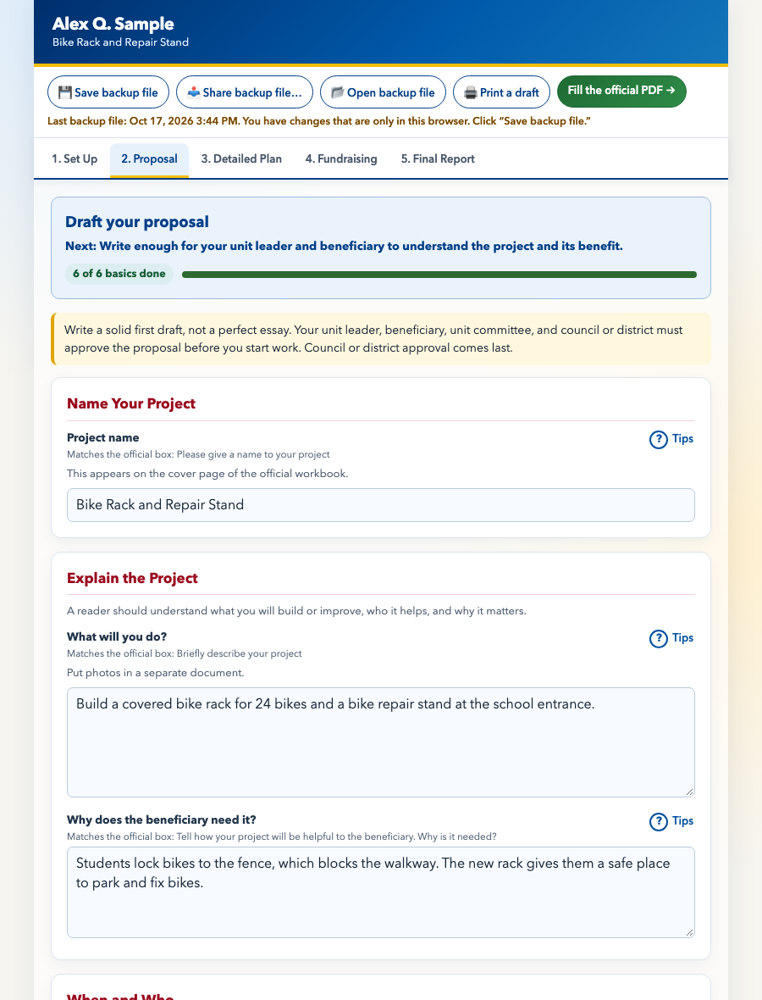

Eagle Project Workbook Helper
Free, offline helpers for the Eagle Scout Service Project Workbook. Type your answers in a friendly page, then put them into the official workbook PDF.
These pages never send your answers anywhere. Backup files and PDFs hold personal details (name, birth date, contacts), so they go wherever you copy or share them. This is an independent helper, not made or endorsed by Scouting America. Read the entire official workbook (PDF) ↗, and read its “Message to Scouts and Parents or Guardians” with a parent or guardian.
Pick a page
How it works
- Open the Guided workbook. Start with 1. Set Up and 2. Proposal. Your draft saves automatically in this browser. Click ? Tips next to a box for an example and what to avoid.
- Click 💾 Save backup file often. It saves a file ending in
.json, usually in your Downloads folder. That file is your real save: browsers can erase saved data. Then copy it somewhere safe: drag it into Google Drive, Dropbox, or OneDrive, or email it to yourself. Ask a parent first: the file holds your birth date, contacts, and address. On an iPhone or iPad, 📤 Share backup file… opens the share menu (Drive, Mail, Messages, and more). Everywhere else, dragging the file into Drive is the dependable way. - When you’re ready, click Fill the official PDF →. Get the official PDF, choose your answers, and create the filled PDF.
- Open the filled PDF and read every page. Print the pages that need signatures and get them signed (this helper works with pages signed on paper and never fills signatures in).
- Scan or photograph each signed page and add it on the workbook’s Signed Pages tab, with permits, other attachments, and links. If someone asks for the whole workbook, Step 5 on the Fill page can make a submission copy with the signed pages inserted after their official pages (optional). Ask your unit leader or council how they want things turned in.

Which file to use, and when
Work in the workbook pages and keep your backup file. Make the PDFs from it when you need them. If all you have is a submission copy, this helper can’t read your answers back from it.
| Draft | What a workbook page saves automatically in this browser on this computer. Use it while you work. It can be lost, so save a backup file often. |
|---|---|
| Backup file (.json) | Your real save and your working copy. It holds all your answers, your scanned signed pages, and your links. Use it to keep working (Open backup file), to move to another computer, and to fill the PDF. Keep it private and somewhere safe. |
| Filled official PDF | The official Scouting America workbook with your answers typed into its own boxes. Use it to read your answers, print, and share for approvals and signatures. You can also turn it back into a backup file, but only your answers come back, not signed pages or links (unless that workbook page already has a draft here, which keeps its own). |
| Submission copy | The filled workbook with your scanned signed pages inserted after their official pages, plus a list page. Use it only when someone asks for the whole workbook with its signatures in one file, and ask your unit leader or council what they want. It is a printed copy: it can’t be edited and can’t be turned back into a backup file. |
| Printed draft | A simple printout for talking your plans over with your unit leader or coach. Marked “DRAFT: not the official workbook.” Don’t hand it in. |
Privacy
- The pages never send your answers anywhere. The only network requests are two optional ones: the Get the official PDF for me button, which downloads the blank workbook from scouting.org, and the Chat with Scoutly button on the workbook pages. It shows Scouting America’s own chatbot (from scoutly.scouting.org) in a labeled floating window, and only after you click. What you type there goes to Scouting America, so don’t type your name or contact details.
- Backup files and filled PDFs contain names, birth dates, phone numbers, and addresses. Once you add signed pages, the backup file and the submission copy also hold pictures of the adults’ signatures. Share them only with the people reviewing your project.
- On a shared computer, save a backup file, then use erase this draft from this browser at the bottom of a workbook page. That also erases any scans of signed pages saved in this browser.
Common questions
Where do I get the Eagle Scout Service Project Workbook?
From Scouting America: the official workbook PDF (No. 2023a) ↗. The Fill page can also get it for you.
Can I fill out the Eagle project workbook on my phone or a Chromebook?
Yes. The workbook pages are made for an ordinary web browser on a phone, tablet, or computer. You type your Eagle project proposal, project plan, fundraising application, and project report there, then the Fill page puts your answers into the official PDF.
Does it help with the Eagle project proposal, plan, fundraising application, and report?
Yes. Many boxes have a “? Tips” button with a made-up example and a common mistake to avoid. Tips are guidance, not requirements; the official workbook and your council decide what is needed.
What about the signed pages?
Add a scan or photo of each signed page (the proposal, the fundraising application if you need one, and the project report) on the Signed Pages tab. You can make one printed-style file with each signed page inserted after its official page.
Where can I ask a general Scouting question?
Ask your unit leader, your project coach, or your council first. Scouting America also has a chatbot called Scoutly at scouting.org: click the floating robot icon in the lower-right corner. Don’t type your name or contact details into it. It doesn’t replace your council.
Is it official? Does it cost anything?
It is free, and it is an independent helper, not made or endorsed by Scouting America. Your council and your unit leader decide what to hand in.
If something doesn’t work
- A page says “Loading…” or that helper files are missing: unzip (extract) the download first, and keep these pages next to the
libandvendorfolders. - Your answers are gone: you may be in a different browser, or browser data was cleared. Click 📂 Open backup file and choose your latest backup file.
- More help is in the README.md file that came with these pages (it opens as plain text), or on the project’s GitHub page ↗.